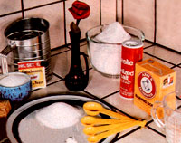

Dough Gods!
With colder weather ahead, more and more folks will be firing up their ovens to bake bread. And while you're preparing a batch of loaves, you might just want to whip up a platter of these doughy treats.
by L.R. and Karen E. Erickson
January/February 1982
Back in Great-Grandma's day, bread baking was a tad more time-consuming than it is now. The job would usually begin during the evening prior to baking day, when the cook would prepare a starter dough . . . using a little flour, sugar, milk, and slow-acting yeast (which was the only type then available). The bowl containing that concoction was wrapped in a towel (or, if the weather was particularly cold, a blanket) and left overnight to allow the yeast to multiply.
The following morning, the remaining ingredients were added, and the bread-to-be was placed close enough to the woodburning range to let the yeast continue to work. By noon, generally, the first rise was done, and-before punching the dough down and allowing the yeast to work one more time-the pioneer chef would often pinch off some of the still-raw material . . . drop squares of it into just-short-of-smoking melted grease ... and produce a batch of "dough gods" . . . for a hot and hearty midday meal!
Today's kitchen artists can enjoy the pioneer pastry, too . . . in a matter of two or three hours if quick-acting yeast is used, or in minutes if there's previously prepared dough in the freezer! Furthermore, dough gods can be produced from any bread "batter", but our family's favorite fried treats are made from sourdough French bread fixings!
FIT TO BE FRIED
It's simple enough to prepare a good sourdough. Just mix a packet of dry, activated yeast with 1-1/2 cups of warm (about 110°F) water, and add 2 cups of flour. Stir in a cup of sourdough starter (either borrow some or make your own, using the recipe in the accompanying sidebar), 2 tablespoons of melted butter, 2 teaspoons of salt, and 3 tablespoons of sugar . . . and beat the mixture until it's smooth. Then sift 1 cup of flour and 1/2 teaspoon of baking soda into the batter, and gradually add between 2 and 2-1/2 additional cups of flour . . . working it in by hand, or with dough hooks and a mixer, until a moderately stiff consistency is achieved.
Now, turn the dough out onto a lightly floured surface and knead it for 10 to 15 minutes (you're done when it starts "snapping", like chewing gum, while it's being worked). Once kneaded, the ball should be set in a greased bowl, turned so that it's coated on all sides, and left in a suitable warm spot to rise until it has doubled in volume (usually after 1-1/2 to 2 hours). Then punch the dough down and tell your hungry crew to get ready!
To cook the little pastries, heat solid shortening or vegetable oil-about two inches deep-in a heavy skillet or Dutch oven. It's best to test the temperature of the liquid-by dropping in a small scrap of dough-before you actually start frying the squares. If the sample rises to the surface immediately and turns a golden-but not dark-brown, the oil is just right. (It's important to keep the shortening at the correct temperature, to limit the amount of grease absorbed by the food.)
When everything's prepared, cut off a small piece of dough, pull it out with your hands until it's thin, and carefully slip it into the hot fat . . . cooking both sides until they're nicely browned. Then drain the goodies on paper towels and rush them-still piping hot-to the table, serve them topped with butter and real maple syrup, and (after you grab one for yourself) watch them disappear!
Once your eager eaters have had their fill, you can wrap the leftovers (if there are any!) and store them in the refrigerator. They make great breakfast food when filled with homemade jelly or jam, or rolled in whatever coatings you use on doughnuts.
Our youngsters are so fond of dough gods that they'll often volunteer to undertake usually avoided tasks (including weeding the garden! ) if we'll make a few of the delicacies on baking day. We can't guarantee that dough-god rewards will encourage similar industrious habits on the part of your younger homesteaders, but we can just about promise that you and your family will thoroughly enjoy the old-timey treats!
JUST FOR STARTERS...
As mentioned in the accompanying article, you may well be able to bor row some sourdough starter from a friend or relative who's a fan of the pioneer fixings . . . since most enthusiasts are proud of their particular recipes and will be eager to share. However, if you aren't able to locate a source of starter, you can quite easily make your own.
To do so, simply mix 2-1/2 cups of warm (about 110°F) water with a package of dry yeast, 2 cups of flour, and a tablespoon of sugar. Put the mixture in a glass or plastic container-covered with a towel or several thicknesses of cheesecloth-and place it in a warm spot for seven days . . . being sure to stir it two or three times daily.
A starter prepared in such a way will be perfectly fine to begin with, and it'll actually improve as it ages. You can keep it alive indefinitely by adding 1/2 teaspoon of sugar and 3/4 cup each of flour and water for every cup of starter removed. After making such additions, place the mixture in a warm spot for a day-stirring it occasionally-then store it in the refrigerator. Your own starter can then be used, to prepare a variety of delicious doughs, for as long as you care to keep it going!
|
 |
 |
|